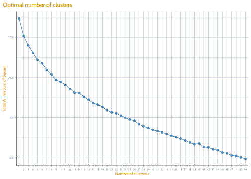
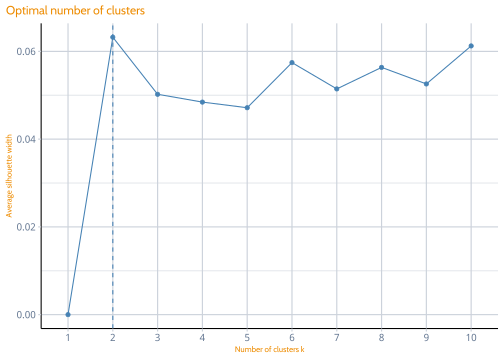
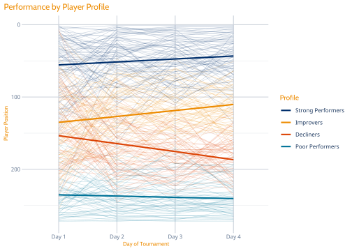

4 Results Analysis
4.1 Player Choice Clustering
First let’s see if there’s any interesting patterns in player choices.
## Importance of components:
## PC1 PC2 PC3 PC4 PC5 PC6 PC7 PC8 PC9 PC10 PC11 PC12 PC13
## Standard deviation 0.62297 0.59010 0.53747 0.5280 0.50823 0.50156 0.46683 0.45066 0.44262 0.43355 0.40197 0.39182 0.38125
## Proportion of Variance 0.06528 0.05858 0.04859 0.0469 0.04345 0.04232 0.03666 0.03416 0.03296 0.03162 0.02718 0.02583 0.02445
## Cumulative Proportion 0.06528 0.12386 0.17245 0.2193 0.26280 0.30512 0.34178 0.37594 0.40890 0.44051 0.46769 0.49352 0.51797
## PC14 PC15 PC16 PC17 PC18 PC19 PC20 PC21 PC22 PC23 PC24 PC25 PC26
## Standard deviation 0.37416 0.36402 0.35479 0.3491 0.34056 0.33048 0.32658 0.31780 0.30817 0.30574 0.29249 0.29141 0.28794
## Proportion of Variance 0.02355 0.02229 0.02117 0.0205 0.01951 0.01837 0.01794 0.01699 0.01597 0.01572 0.01439 0.01428 0.01395
## Cumulative Proportion 0.54152 0.56381 0.58498 0.6055 0.62499 0.64336 0.66131 0.67830 0.69427 0.70999 0.72439 0.73867 0.75262
## PC27 PC28 PC29 PC30 PC31 PC32 PC33 PC34 PC35 PC36 PC37 PC38 PC39
## Standard deviation 0.28300 0.27352 0.27208 0.26291 0.2558 0.25330 0.25135 0.24832 0.23910 0.23348 0.22027 0.21965 0.21697
## Proportion of Variance 0.01347 0.01258 0.01245 0.01163 0.0110 0.01079 0.01063 0.01037 0.00962 0.00917 0.00816 0.00812 0.00792
## Cumulative Proportion 0.76609 0.77867 0.79113 0.80275 0.8138 0.82455 0.83518 0.84555 0.85516 0.86433 0.87250 0.88061 0.88853
## PC40 PC41 PC42 PC43 PC44 PC45 PC46 PC47 PC48 PC49 PC50 PC51 PC52
## Standard deviation 0.20504 0.20456 0.1995 0.19582 0.19084 0.18701 0.18378 0.18289 0.18222 0.17804 0.17003 0.16669 0.1598
## Proportion of Variance 0.00707 0.00704 0.0067 0.00645 0.00613 0.00588 0.00568 0.00563 0.00559 0.00533 0.00486 0.00467 0.0043
## Cumulative Proportion 0.89560 0.90264 0.9093 0.91579 0.92191 0.92780 0.93348 0.93911 0.94469 0.95002 0.95489 0.95956 0.9639
## PC53 PC54 PC55 PC56 PC57 PC58 PC59 PC60 PC61 PC62 PC63 PC64 PC65
## Standard deviation 0.15848 0.13534 0.1244 0.12278 0.1193 0.11639 0.11340 0.10596 0.09852 0.09748 0.09228 0.08827 0.08432
## Proportion of Variance 0.00422 0.00308 0.0026 0.00254 0.0024 0.00228 0.00216 0.00189 0.00163 0.00160 0.00143 0.00131 0.00120
## Cumulative Proportion 0.96808 0.97116 0.9738 0.97630 0.9787 0.98098 0.98314 0.98503 0.98666 0.98826 0.98969 0.99100 0.99220
## PC66 PC67 PC68 PC69 PC70 PC71 PC72 PC73 PC74 PC75 PC76 PC77 PC78
## Standard deviation 0.08074 0.07811 0.07650 0.06998 0.05911 0.05795 0.05495 0.05444 0.05370 0.05088 0.04717 0.03898 0.03103
## Proportion of Variance 0.00110 0.00103 0.00098 0.00082 0.00059 0.00056 0.00051 0.00050 0.00049 0.00044 0.00037 0.00026 0.00016
## Cumulative Proportion 0.99329 0.99432 0.99530 0.99613 0.99672 0.99728 0.99779 0.99829 0.99877 0.99921 0.99958 0.99984 1.00000
## PC79 PC80 PC81
## Standard deviation 2.946e-16 1.87e-16 6.46e-17
## Proportion of Variance 0.000e+00 0.00e+00 0.00e+00
## Cumulative Proportion 1.000e+00 1.00e+00 1.00e+00So unfortunately, as is usually the case, we don’t really see great performance until we hit the 30th principal component which means the plots for clustering aren’t all that informative. In an ideal world we’d see the nice situation where the first and second components explain a huge chunk of variance. Perhaps this shouldn’t be too Let’s just jump straight to kmeans on this and see if anything interesting comes up. Unfortunately the within sum of square approach is telling us we should have something like 40 clusters which is too much to be interesting.
fviz_nbclust(golfer.pca$x[,1:30], kmeans, method = "wss",
k.max = 50) +
tx_def() +
theme(axis.text = element_text(size = 5))
The silhouette approach chooses k based on an assessment of how similar is a point is to its own cluster compared to other clusters. This at least gives us a reasonable answer, but everything is pointing towards it not really providing much in terms of insights (particularly since it is only suggesting two clusters).

As expected, there isn’t really any interesting about these at all. Cluster one selected better performing golfers slightly more often than cluster two but otherwise this mostly looks like noise. When this is combined with the correlation plot and the finding that the winner didn’t necessarily make a special selection of players compared to overall averages this would also suggest there weren’t really groups of players who were selected together either. Did anyone really know what they were doing?
golfer.km <- kmeans(golfer.pca$x[,1:30], 2)
wide_dat$cluster <- golfer.km$cluster
wide_dat %>% select(-alt_name) %>%
gather(key, val, - cluster) %>%
filter(val == 1) %>%
group_by(cluster,key) %>%
summarise(count = n()) %>%
group_by(cluster) %>%
mutate(perc = (count / sum(count) * 100)) %>%
left_join(score_dat %>% select(player, r4_rank), by = c("key" = "player")) %>%
ungroup() %>%
arrange(r4_rank) %>%
mutate(key = forcats::as_factor(key)) %>%
ggplot(aes(x = key, y = perc)) +
geom_col(stat = "identity") +
facet_wrap(~ cluster) +
tx_def() +
theme(axis.text.x = element_text(size = 3, angle = 90, vjust = 0.5))
Group one had slightly lower scores and slightly higher SD on average.
final_scores %>% left_join(wide_dat %>% select(alt_name, cluster)) %>%
group_by(cluster) %>%
summarize(m = mean(score_4),
sd = sd(score_4))## # A tibble: 2 x 3
## cluster m sd
## <int> <dbl> <dbl>
## 1 1 277. 65.8
## 2 2 248. 54.1Perhaps a simpler way to look at this is just to count the number of times any player is selected in the top 10, top 20, top 30, etc.
by_ten <- wide_dat %>% select(-cluster) %>%
gather(key, val, -alt_name) %>%
left_join(final_scores %>% select(alt_name, score_4) %>%
arrange(score_4) %>%
mutate(rank = 1:n()) %>%
group_by(score_4) %>%
mutate(rank = min(rank))) %>%
filter(val == 1) %>%
arrange(score_4) %>%
group_by(alt_name) %>%
mutate(group = case_when(rank <= 10 ~ "Top 10",
rank <= 20 ~ "11-20",
rank <= 30 ~ "21-30",
rank <= 40 ~ "31-40",
rank <= 50 ~ "41-50",
TRUE ~ ">50"))
by_ten %>% group_by(group) %>%
mutate(num_g = length(unique(alt_name))) %>%
group_by(group,key) %>%
summarise(count = n(), num_g = unique(num_g)) %>%
mutate(perc = (count / num_g)*100) %>%
left_join(score_dat %>% select(player, r4_rank), by = c("key" = "player")) %>%
arrange(r4_rank) %>%
left_join(group_dict %>% rename(selected = group, key = player)) %>%
mutate(
key = glue::glue("{key} ({r4_rank})"),
key = forcats::as_factor(key)) %>%
filter(group %in% c("Top 10", "11-20", "21-30")) %>%
ggplot(aes(x = key, y = perc, colour = group)) +
geom_point() +
coord_flip() +
facet_grid( selected ~ group, scales = "free", space = "free")
4.1.1 Growth Mixture Model
Another way we could look at this would be to leverage what seemed like potentially more promising data in terms of patterns of results, and maybe there are smaller groups of players that are shared in those? We can accomplish this analysis using a growth mixture model, which creates groups of players with similar trajectories. If we were doing this for a real project
gmm_dat <- final_scores %>%
gather("key", "value", -c(alt_name)) %>%
mutate(key = factor(key, labels = c("Day 1", "Day 2", "Day 3", "Day 4"))) %>%
group_by(key) %>%
arrange(key, value) %>%
mutate(pos = 1:n()) %>%
group_by(key, value) %>%
mutate(pos = min(pos)) %>%
ungroup %>%
mutate(ID = as.numeric(as.factor(alt_name)),
time = as.numeric(key))
lcmm1 <- lcmm(pos ~ time, subject = "ID",
mixture = ~ time,
random = ~ time,
ng = 4,
data = as.data.frame(gmm_dat))## Be patient, lcmm is running ...
## The program took 28.1 secondspreds <- predictY(lcmm1, newdata = data.frame(time = c(1, 2, 3, 4)),
draws = TRUE)
preds$pred %>% as.data.frame %>%
gather %>%
separate(key, c("dis", "int", "class"), "_") %>%
group_by(int, class) %>%
mutate(day = paste("Day", 1:4)) %>%
spread(int, value) %>%
ggplot(aes(x = day, y = `50`,group = class)) +
scale_y_reverse() +
geom_ribbon(aes(ymin = `2.5`, ymax = `97.5`), alpha = 0.2) +
geom_line() +
tx_def()